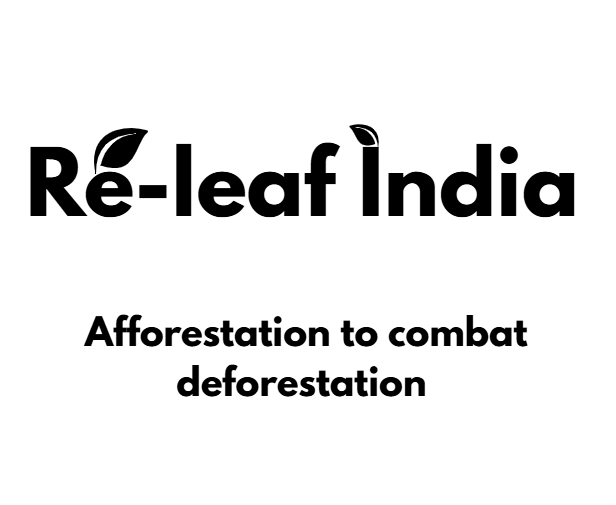

Through photosynthesis, trees take in carbon dioxide and release the oxygen we breathe. Forests also trap dust and pollutants, which keeps the air cleaner for nearby towns and villages.
Tree roots hold the soil together and help rain soak into the ground instead of running off. This refills groundwater, feeds rivers and wells, and reduces floods and soil erosion.
From tigers and elephants to birds, insects, and countless plants, forests are home to much of India's wildlife. Insects and birds living there also help pollinate crops and spread seeds.
Millions of people living in and near forests depend on them for food, firewood, medicinal plants, bamboo, and income from forest produce. For many communities, forests are also part of their culture and traditions.
25.17%
The total forest and tree cover of the country is 8,27,356.95 km2, which is 25.17% of the geographical area of the country.
7,200 million tonnes
India's forests store over 7,200 million tonnes of carbon — a natural shield against climate change.
Requires the Central Government's approval before forest land is used for non-forest purposes. In 2023 it was renamed the Van (Sanrakshan Evam Samvardhan) Adhiniyam.
Makes environmental stability its main aim and sets a goal of one-third of the country under forest or tree cover.
Recognises the rights of Scheduled Tribes and other traditional forest dwellers over forest land and resources.
Aims to increase forest and tree cover on 5 million hectares and improve the quality of forest cover on another 5 million hectares.
Creates funds and authorities to plant trees in return for forest land used for non-forest purposes.
Afforestation alone cannot solve deforestation. The initiatives taken by the Government can supply the trees, but the true will has to come from people. Forests are not disappearing somewhere far away. It is happening in our own state, and it affects our own air, our own water, and our own life. This is why awareness matters.
Change starts from us, not from a distance!
That's where Re-Leaf India comes in. Our platform exists to show you exactly what is happening to forests in our own state. Because knowing our state's story is the first step to actually caring about it.
Explore what's happening where you live.